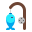

Pelajaranบทที่
Keluarga Saya
การสนทนาแนะนำครอบครัว
- อต.3/3
- อต.3/5
- อต.3/7
Mari bertuturมาพูดกันเถอะ
SitiBerapa orang adik-beradik kamu?
NurulKami tiga beradik. Saya anak sulung.
SitiApa pekerjaan ayah kamu?
NurulAyah saya seorang guru. Ibu saya seorang peniaga.
SitiKamu tinggal dengan siapa?
NurulSaya tinggal dengan ayah, ibu, adik-adik dan nenek.
| # | Gambarภาพ | Bahasa Melayu | Maksudความหมาย |
|---|---|---|---|
| 1 |  | adik-beradik | พี่น้อง |
| 2 | anak sulung | ลูกคนโต | |
| 3 | anak bongsu | ลูกคนสุดท้อง | |
| 4 | pekerjaan | อาชีพ | |
| 5 |  | guru | ครู |
| 6 |  | peniaga | พ่อค้า แม่ค้า |
| 7 | petani | ชาวนา เกษตรกร | |
| 8 |  | nelayan | ชาวประมง |
Latihanแบบฝึกหัด
Padankan soalan dengan jawapan.จับคู่คำถามกับคำตอบ
Soalan Jawapan 1) Berapa orang adik-beradik kamu? ก. Ayah saya seorang petani. 2) Apa pekerjaan ayah kamu? ข. Saya tinggal di Yala. 3) Kamu tinggal di mana? ค. Kami empat beradik. Lihat jawapanดูเฉลย
1–ค, 2–ก, 3–ข
Jawab soalan tentang keluarga kamu.ตอบคำถามเกี่ยวกับครอบครัวของตนเอง
- Berapa orang adik-beradik kamu?
- Apa pekerjaan ibu kamu?
Temu bual seorang rakan tentang keluarganya, kemudian ceritakan kepada kelas.สัมภาษณ์เพื่อน 1 คนเรื่องครอบครัว แล้วเล่าให้ชั้นเรียนฟัง
Kuiz Kendiriทดสอบตนเอง
Pilih maksud yang betul. Kuiz boleh diulang; soalan dipilih secara rawak setiap kali.เลือกความหมายที่ถูกต้อง ทำซ้ำได้หลายรอบ ข้อจะสุ่มใหม่ทุกครั้ง
Kad Imbasบัตรคำ
Sentuh kad untuk melihat maksudแตะบัตรเพื่อพลิกดูความหมาย